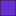

<!doctype html>
<html lang="en">
    <head>
        <meta charset="utf-8">
        <meta http-equiv="X-UA-Compatible" content="IE=edge">
        <meta name="viewport" content="initial-scale=1,user-scalable=no,maximum-scale=1,width=device-width">
        <meta name="mobile-web-app-capable" content="yes">
        <meta name="apple-mobile-web-app-capable" content="yes">
        <link rel="stylesheet" href="css/leaflet.css"><link rel="stylesheet" href="css/L.Control.Locate.min.css">
        <link rel="stylesheet" href="css/qgis2web.css"><link rel="stylesheet" href="css/fontawesome-all.min.css">
        <link rel="stylesheet" href="css/leaflet-search.css">
        <link rel="stylesheet" href="css/leaflet-control-geocoder.Geocoder.css">
        <link rel="stylesheet" href="css/leaflet-measure.css">
        <style>
        html, body, #map {
            width: 100%;
            height: 100%;
            padding: 0;
            margin: 0;
        }
        </style>
        <title>ASOURYA Projects in Marota City</title>
    </head>
    <body>
        <div id="map">
        </div>
        <script src="js/qgis2web_expressions.js"></script>
        <script src="js/leaflet.js"></script><script src="js/L.Control.Locate.min.js"></script>
        <script src="js/leaflet.rotatedMarker.js"></script>
        <script src="js/leaflet.pattern.js"></script>
        <script src="js/leaflet-hash.js"></script>
        <script src="js/Autolinker.min.js"></script>
        <script src="js/rbush.min.js"></script>
        <script src="js/labelgun.min.js"></script>
        <script src="js/labels.js"></script>
        <script src="js/leaflet-control-geocoder.Geocoder.js"></script>
        <script src="js/leaflet-measure.js"></script>
        <script src="js/proj4.js"></script>
        <script src="js/proj4leaflet.js"></script>
        <script src="js/leaflet-search.js"></script>
        <script src="data/project_Fence_1.js"></script>
        <script src="data/Marota_Parcels_2.js"></script>
        <script src="data/Companies_3.js"></script>
        <script>
        var highlightLayer;
        function highlightFeature(e) {
            highlightLayer = e.target;

            if (e.target.feature.geometry.type === 'LineString') {
              highlightLayer.setStyle({
                color: '#ffff00',
              });
            } else {
              highlightLayer.setStyle({
                fillColor: '#ffff00',
                fillOpacity: 1
              });
            }
        }
        var crs = new L.Proj.CRS('EPSG:22780', '+proj=sterea +lat_0=34.2 +lon_0=39.15 +k=0.9995341 +x_0=0 +y_0=0 +ellps=clrk80ign +units=m +no_defs', {
            resolutions: [2800, 1400, 700, 350, 175, 84, 42, 21, 11.2, 5.6, 2.8, 1.4, 0.7, 0.35, 0.14, 0.07],
        });
        var map = L.map('map', {
            crs: crs,
            continuousWorld: false,
            worldCopyJump: false, 
            zoomControl:true, maxZoom:28, minZoom:1
        }).fitBounds([[33.48978677752759,36.24801259172449],[33.504281610793235,36.2787568903493]]);
        var hash = new L.Hash(map);
        map.attributionControl.setPrefix('<a href="https://github.com/tomchadwin/qgis2web" target="_blank">qgis2web</a> &middot; <a href="https://leafletjs.com" title="A JS library for interactive maps">Leaflet</a> &middot; <a href="https://qgis.org">QGIS</a>');
        var autolinker = new Autolinker({truncate: {length: 30, location: 'smart'}});
        L.control.locate({locateOptions: {maxZoom: 19}}).addTo(map);
        var measureControl = new L.Control.Measure({
            position: 'topleft',
            primaryLengthUnit: 'meters',
            secondaryLengthUnit: 'kilometers',
            primaryAreaUnit: 'sqmeters',
            secondaryAreaUnit: 'hectares'
        });
        measureControl.addTo(map);
        document.getElementsByClassName('leaflet-control-measure-toggle')[0]
        .innerHTML = '';
        document.getElementsByClassName('leaflet-control-measure-toggle')[0]
        .className += ' fas fa-ruler';
        var bounds_group = new L.featureGroup([]);
        function setBounds() {
        }
        map.createPane('pane_OSMStandard_0');
        map.getPane('pane_OSMStandard_0').style.zIndex = 400;
        var layer_OSMStandard_0 = L.tileLayer('http://tile.openstreetmap.org/{z}/{x}/{y}.png', {
            pane: 'pane_OSMStandard_0',
            opacity: 0.3,
            attribution: '<a href="https://www.openstreetmap.org/copyright">© OpenStreetMap contributors, CC-BY-SA</a>',
            minZoom: 1,
            maxZoom: 28,
            minNativeZoom: 0,
            maxNativeZoom: 19
        });
        layer_OSMStandard_0;
        map.addLayer(layer_OSMStandard_0);
        function pop_project_Fence_1(feature, layer) {
            layer.on({
                mouseout: function(e) {
                    for (i in e.target._eventParents) {
                        e.target._eventParents[i].resetStyle(e.target);
                    }
                },
                mouseover: highlightFeature,
            });
            var popupContent = '<table>\
                    <tr>\
                        <td colspan="2">' + (feature.properties['OBJECTID'] !== null ? autolinker.link(feature.properties['OBJECTID'].toLocaleString()) : '') + '</td>\
                    </tr>\
                    <tr>\
                        <td colspan="2">' + (feature.properties['Entity'] !== null ? autolinker.link(feature.properties['Entity'].toLocaleString()) : '') + '</td>\
                    </tr>\
                    <tr>\
                        <td colspan="2">' + (feature.properties['RefName'] !== null ? autolinker.link(feature.properties['RefName'].toLocaleString()) : '') + '</td>\
                    </tr>\
                    <tr>\
                        <td colspan="2">' + (feature.properties['Shape_Length'] !== null ? autolinker.link(feature.properties['Shape_Length'].toLocaleString()) : '') + '</td>\
                    </tr>\
                    <tr>\
                        <td colspan="2">' + (feature.properties['Hight'] !== null ? autolinker.link(feature.properties['Hight'].toLocaleString()) : '') + '</td>\
                    </tr>\
                </table>';
            layer.bindPopup(popupContent, {maxHeight: 400});
        }

        function style_project_Fence_1_0() {
            return {
                pane: 'pane_project_Fence_1',
                opacity: 1,
                color: 'rgba(5,5,2,1.0)',
                dashArray: '',
                lineCap: 'square',
                lineJoin: 'bevel',
                weight: 2.0,
                fillOpacity: 0,
                interactive: true,
            }
        }
        map.createPane('pane_project_Fence_1');
        map.getPane('pane_project_Fence_1').style.zIndex = 401;
        map.getPane('pane_project_Fence_1').style['mix-blend-mode'] = 'normal';
        var layer_project_Fence_1 = new L.geoJson(json_project_Fence_1, {
            attribution: '',
            interactive: true,
            dataVar: 'json_project_Fence_1',
            layerName: 'layer_project_Fence_1',
            pane: 'pane_project_Fence_1',
            onEachFeature: pop_project_Fence_1,
            style: style_project_Fence_1_0,
        });
        bounds_group.addLayer(layer_project_Fence_1);
        map.addLayer(layer_project_Fence_1);
        function pop_Marota_Parcels_2(feature, layer) {
            layer.on({
                mouseout: function(e) {
                    for (i in e.target._eventParents) {
                        e.target._eventParents[i].resetStyle(e.target);
                    }
                },
                mouseover: highlightFeature,
            });
            var popupContent = '<table>\
                    <tr>\
                        <th scope="row">اسم المقسم</th>\
                        <td>' + (feature.properties['Parcels_Name'] !== null ? autolinker.link(feature.properties['Parcels_Name'].toLocaleString()) : '') + '</td>\
                    </tr>\
                    <tr>\
                        <th scope="row">محيط المقسم</th>\
                        <td>' + (feature.properties['Shape_Length'] !== null ? autolinker.link(feature.properties['Shape_Length'].toLocaleString()) : '') + '</td>\
                    </tr>\
                    <tr>\
                        <th scope="row">مساحة المقسم</th>\
                        <td>' + (feature.properties['Shape_Area'] !== null ? autolinker.link(feature.properties['Shape_Area'].toLocaleString()) : '') + '</td>\
                    </tr>\
                    <tr>\
                        <th scope="row">التصنيف العام</th>\
                        <td>' + (feature.properties['General_classification'] !== null ? autolinker.link(feature.properties['General_classification'].toLocaleString()) : '') + '</td>\
                    </tr>\
                    <tr>\
                        <th scope="row">التصنيف الدقيق</th>\
                        <td>' + (feature.properties['specific_classification'] !== null ? autolinker.link(feature.properties['specific_classification'].toLocaleString()) : '') + '</td>\
                    </tr>\
                    <tr>\
                        <th scope="row">موقع المقسم</th>\
                        <td>' + (feature.properties['Location'] !== null ? autolinker.link(feature.properties['Location'].toLocaleString()) : '') + '</td>\
                    </tr>\
                    <tr>\
                        <th scope="row">المالك</th>\
                        <td>' + (feature.properties['Owner'] !== null ? autolinker.link(feature.properties['Owner'].toLocaleString()) : '') + '</td>\
                    </tr>\
                    <tr>\
                        <td colspan="2"><strong>عدد المهندسين الإجمالي من جميع الشركات والتخصصات</strong><br />' + (feature.properties['Engineers'] !== null ? autolinker.link(feature.properties['Engineers'].toLocaleString()) : '') + '</td>\
                    </tr>\
                    <tr>\
                        <td colspan="2"><strong>عدد اليد العاملة من جميع الشركات والتخصصات</strong><br />' + (feature.properties['ManBower'] !== null ? autolinker.link(feature.properties['ManBower'].toLocaleString()) : '') + '</td>\
                    </tr>\
                    <tr>\
                        <td colspan="2"><strong>الأعمال الحالية</strong><br />' + (feature.properties['Recent_Works'] !== null ? autolinker.link(feature.properties['Recent_Works'].toLocaleString()) : '') + '</td>\
                    </tr>\
                </table>';
            layer.bindPopup(popupContent, {maxHeight: 400});
        }
        function style_Marota_Parcels_2_0(feature) {
            var context = {
                feature: feature,
                variables: {}
            };
            // Start of if blocks and style check logic
            if (exp_Marota_Parcels_2rule0_eval_expression(context)) {
                  return {
                pane: 'pane_Marota_Parcels_2',
                opacity: 1,
                color: 'rgba(35,35,35,1.0)',
                dashArray: '',
                lineCap: 'butt',
                lineJoin: 'miter',
                weight: 1.0, 
                fill: true,
                fillOpacity: 1,
                fillColor: 'rgba(103,46,208,1.0)',
                interactive: true,
            };
                }
                else if (exp_Marota_Parcels_2rule2_eval_expression(context)) {
                  return {
                pane: 'pane_Marota_Parcels_2',
                opacity: 1,
                color: 'rgba(247,247,247,1.0)',
                dashArray: '',
                lineCap: 'butt',
                lineJoin: 'miter',
                weight: 1.0, 
                fill: true,
                fillOpacity: 1,
                fillColor: 'rgba(150,150,150,1.0)',
                interactive: true,
            };
                }
            else {
                return {
                pane: 'pane_Marota_Parcels_2',
                opacity: 1,
                color: 'rgba(53,121,177,1.0)',
                dashArray: '',
                lineCap: 'square',
                lineJoin: 'bevel',
                weight: 1.0,
                fillOpacity: 0,
                interactive: true,
            };
            }
        }
        map.createPane('pane_Marota_Parcels_2');
        map.getPane('pane_Marota_Parcels_2').style.zIndex = 402;
        map.getPane('pane_Marota_Parcels_2').style['mix-blend-mode'] = 'normal';
        var layer_Marota_Parcels_2 = new L.geoJson(json_Marota_Parcels_2, {
            attribution: '',
            interactive: true,
            dataVar: 'json_Marota_Parcels_2',
            layerName: 'layer_Marota_Parcels_2',
            pane: 'pane_Marota_Parcels_2',
            onEachFeature: pop_Marota_Parcels_2,
            style: style_Marota_Parcels_2_0,
        });
        bounds_group.addLayer(layer_Marota_Parcels_2);
        map.addLayer(layer_Marota_Parcels_2);
        function pop_Companies_3(feature, layer) {
            layer.on({
                mouseout: function(e) {
                    for (i in e.target._eventParents) {
                        e.target._eventParents[i].resetStyle(e.target);
                    }
                },
                mouseover: highlightFeature,
            });
            var popupContent = '<table>\
                    <tr>\
                        <td colspan="2">' + (feature.properties['RefName'] !== null ? autolinker.link(feature.properties['RefName'].toLocaleString()) : '') + '</td>\
                    </tr>\
                </table>';
            layer.bindPopup(popupContent, {maxHeight: 400});
        }

        function style_Companies_3_0() {
            return {
                pane: 'pane_Companies_3',
                opacity: 1,
                color: 'rgba(35,35,35,1.0)',
                dashArray: '',
                lineCap: 'butt',
                lineJoin: 'miter',
                weight: 1.0, 
                fill: true,
                fillOpacity: 1,
                fillColor: 'rgba(229,182,54,1.0)',
                interactive: true,
            }
        }
        map.createPane('pane_Companies_3');
        map.getPane('pane_Companies_3').style.zIndex = 403;
        map.getPane('pane_Companies_3').style['mix-blend-mode'] = 'normal';
        var layer_Companies_3 = new L.geoJson(json_Companies_3, {
            attribution: '',
            interactive: true,
            dataVar: 'json_Companies_3',
            layerName: 'layer_Companies_3',
            pane: 'pane_Companies_3',
            onEachFeature: pop_Companies_3,
            style: style_Companies_3_0,
        });
        bounds_group.addLayer(layer_Companies_3);
        map.addLayer(layer_Companies_3);
            var title = new L.Control();
            title.onAdd = function (map) {
                this._div = L.DomUtil.create('div', 'info');
                this.update();
                return this._div;
            };
            title.update = function () {
                this._div.innerHTML = '<h2>ASOURYA Projects in Marota City</h2>';
            };
            title.addTo(map);
        var osmGeocoder = new L.Control.Geocoder({
            collapsed: true,
            position: 'topleft',
            text: 'Search',
            title: 'Testing'
        }).addTo(map);
        document.getElementsByClassName('leaflet-control-geocoder-icon')[0]
        .className += ' fa fa-search';
        document.getElementsByClassName('leaflet-control-geocoder-icon')[0]
        .title += 'Search for a place';
        var baseMaps = {};
        L.control.layers(baseMaps,{' Companies': layer_Companies_3,'Marota_Parcels<br /><table><tr><td style="text-align: center;"></td><td>محاضر آاسوريا قيد التشييد</td></tr><tr><td style="text-align: center;"></td><td>محاضر ماروتا </td></tr><tr><td style="text-align: center;"></td><td>محاضر آاسوريا </td></tr></table>': layer_Marota_Parcels_2,' project_Fence': layer_project_Fence_1,"OSM Standard": layer_OSMStandard_0,}).addTo(map);
        setBounds();
        var i = 0;
        layer_Marota_Parcels_2.eachLayer(function(layer) {
            var context = {
                feature: layer.feature,
                variables: {}
            };
            layer.bindTooltip((layer.feature.properties['Parcels_Name'] !== null?String('<div style="color: #323232; font-size: 7pt; font-family: \'Open Sans\', sans-serif;">' + layer.feature.properties['Parcels_Name']) + '</div>':''), {permanent: true, offset: [-0, -16], className: 'css_Marota_Parcels_2'});
            labels.push(layer);
            totalMarkers += 1;
              layer.added = true;
              addLabel(layer, i);
              i++;
        });
        map.addControl(new L.Control.Search({
            layer: layer_Marota_Parcels_2,
            initial: false,
            hideMarkerOnCollapse: true,
            propertyName: 'Parcels_Name'}));
        document.getElementsByClassName('search-button')[0].className +=
         ' fa fa-binoculars';
        resetLabels([layer_Marota_Parcels_2]);
        map.on("zoomend", function(){
            resetLabels([layer_Marota_Parcels_2]);
        });
        map.on("layeradd", function(){
            resetLabels([layer_Marota_Parcels_2]);
        });
        map.on("layerremove", function(){
            resetLabels([layer_Marota_Parcels_2]);
        });
        </script>
    </body>
</html>
